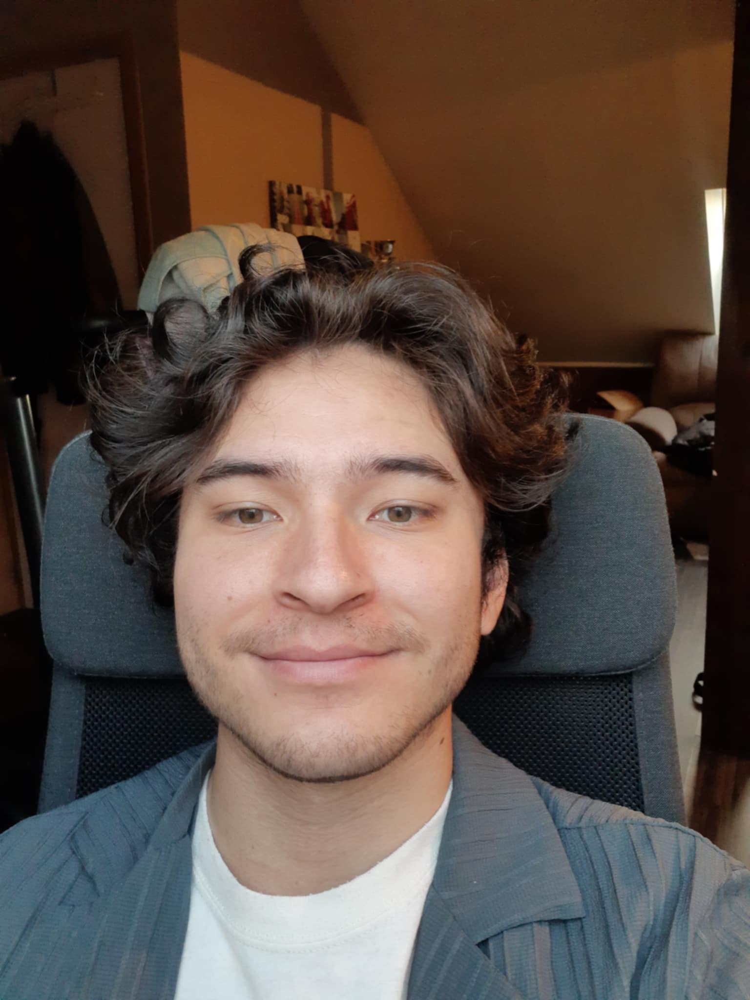

Développeur full stack / Belgique
SÉBASTIENBOTTY.
Des idées plein la tête.
Et les mains dans le code.
Je construis des applications web et mobiles, pour mes clients et par curiosité.
CheckCarCliquer sur la carte pour explorer
01 / 03FR / EN · Belgium
MOINS DE BLA.
PLUS DE PROJETS.
Du travail pour mes clients.
Des idées que j'avais envie de tester.
À chaque fois, quelque chose à construire.
Et d'autres choses dans les tiroirs. Un tour sur mon GitHub ↗

Oui, c'est moi.Derrière l'écran
CURIEUX.
ET CONCRET.
Je suis Sébastien, développeur full stack en Belgique. J'aime passer d'une idée à une application que l'on peut vraiment utiliser.
Une interface, une API, un jeu entre amis : je construis, je teste, je peaufine. Et pour un projet client, vous échangez directement avec celui qui le développe.
Racontez-moi. On verra ensemble
comment lui donner forme.